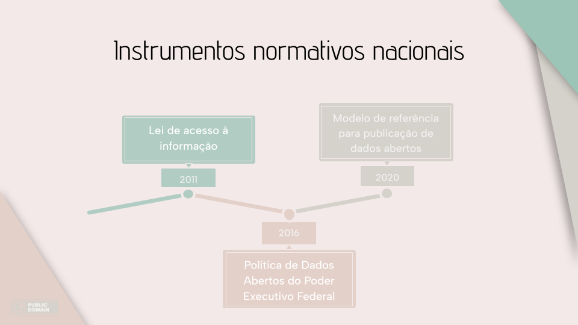
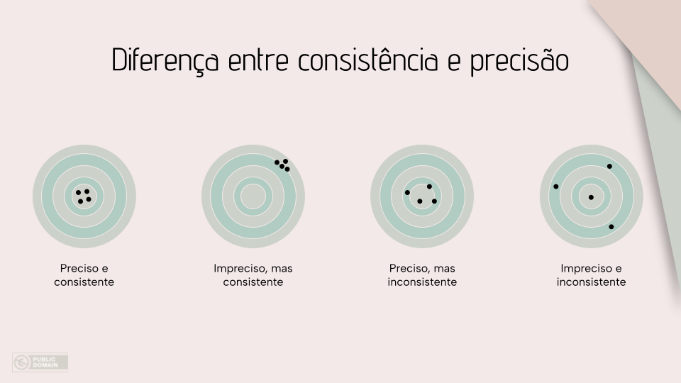

Dados abertos feat Qualidade de Dados
Nesse artigo você encontrará o conteúdo na palestra (keynote) “Dados abertos feat Qualidade de Dados”, apresentada na Python Nordeste 2024, e os slides utilizados. Esta palestra também foi apresentada no evento América Aberta 2024 (trilha Coda.BR) e Python Brasil 2024.
Em outubro de 2023 recebi o prêmio Dorneles Treméa | Jean Ferri em reconhecimento pelo trabalho que faço junto à comunidade Python. No momento do anúncio, fiquei tão surpresa que não consegui agradecer apropriadamente ao vivo. Depois que a emoção arrefeceu, eu só conseguia pensar em uma coisa: “precisarei de uma palestra keynote para agradecer o prêmio”. Meses depois, a organização da Python Nordeste 2024 me convidou para ser a palestrante principal do evento. Essa palestra, é o meu agradecimento.
Esse artigo trata sobre dados abertos e qualidade de dados, o objetivo é apresentar uma visão geral sobre a contribuição dos temas para gestões democráticas, além de conceituar as 6 dimensões para a qualidade de dados e a governança de dados.
Dados abertos
Em 1940, surgia a ideia de “dados abertos científicos”, popularizada por Robert King Merton, que defendia que a pesquisa científica deveria ser gratuita para todos. A primeira vez que o termo “dados abertos” apareceu foi em 1995, em um relatório da Agência Estadunidense para Divulgação de Dados Geofísicos e Ambientais.
Desde então, o debate foi ampliando, amadurecendo e em 2005, a definição do termo “dados abertos” foi publicada no Open Definition:
“Dados abertos são dados que podem ser livremente usados, reutilizados e redistribuídos por qualquer pessoa - sujeitos, no máximo, à exigência de atribuição da fonte e compartilhamento pelas mesmas regras.”
Acrescento a isto um trecho do Decreto 8.777/2016, que amplia o entendimento do conceito, deixando, assim, a definição mais didática:
“Dados abertos são dados [representados em meio digital, estruturados em formato aberto, processáveis por máquina, referenciados na internet], que podem ser livremente usados, reutilizados e redistribuídos por qualquer pessoa - sujeitos, no máximo, à exigência de atribuição da fonte e compartilhamento pelas mesmas regras.”
Por “formato aberto” entende-se extensões de arquivo documentadas publicamente e que seja de livre implantação. Também é importante informar que quando estamos falando sobre dados abertos, nos referimos a dados de interesse público, sem restrição legal de acesso, sejam eles oriundos de instituições públicas ou privadas.
Instrumentos legislativos brasileiros
Em 2003, nós da sociedade civil junto com organizações de mídia e pesquisadores instituímos o Fórum de Direito de Acesso a Informações Públicas. Foi a partir dessas intensas discussões que a Lei de Acesso a Informação (LAI) foi criada. Essa é uma das nossas únicas leis que sua redação não é escrita originalmente pelo poder legislativo. O debate sobre transparência de dados e informações, desde seu princípio, é pautado pela sociedade civil.
Então, em 2016 foi publicado o Decreto 8.777/2016 com a Política de Dados Abertos do Poder Executivo Federal, onde explicita ações que instituições e autarquias devem realizar em direção a uma maior transparência de dados institucionais.
Em 2020, foi publicado o Modelo de Referência para Publicação de Dados Abertos, objetivando prover parâmetros para publicação de dados em formato aberto por estados e municípios. Esse instrumento é um dos marcos do 4. Plano de Ação da Parceria para Governo Aberto. Uma parceria que tem como objetivo promover gestões transparentes, participativas, inclusivas e responsáveis; a qual foi firmada em 2011 e o Brasil é um dos 11 primeiros países signatários.

Transparência de dados na prática
O debate sobre o tema de transparência de dados evoluiu muito entre 2011 e 2019, mas então a moda passou e as ações governamentais foram estabilizando ou minguando, de acordo com o Barómetro Regional de Datos Abiertos para América Latina y el Caribe 2020.
Enquanto sociedade, já entendemos que sem transparência de dados, não há evolução de tecnologia cívica. Além disso, nossa atuação, enquanto sociedade civil na gestão de nossas cidades fica muito limitada. Não queremos retroceder. Queremos sociedades prósperas, equitativas e justas. Para isso, precisamos de governos transparentes. Então, precisamos aprofundar o debate sobre transparência de dados, o que atualmente significa falar sobre “qualidade de dados”.
Propriedade efetiva: o que é? para que serve?
Em 2020, no principal porto do Líbano, o de Beirute, ocorreu uma das maiores explosões não nucleares da nossa história: bairros inteiros foram destruídos, cerca de 220 pessoas morreram e quase 7 mil ficaram feridas. A explosão ocorreu porque, em um dos armazéns haviam toneladas de nitrato de amônio armazenadas sem cumprir a regulação internacional.
Devido a iniciativas de transparência de dados na área “propriedade efetiva”, foi possível usar dados abertos sobre propriedade de empresas para rastrear as proprietárias dessa carga. Consequentemente, a investigação foi mais ágil. Ainda que não tenhamos conclusão do processo judicial até hoje (mas morosidade na justiça é outro assunto).
Dados de “Propriedade efetiva” são referentes às proprietárias de fato de determinada empresa. É bem comum nos depararmos com uma empresa, que é dona de outra empresa, que é dona já de outra empresa, e assim é desenhado um labirinto danado que, às vezes, pode até parecer que os meios de produção estão “distribuídos” entre um grupo grande de pessoas. Mas, quando observada a propriedade efetiva dessas empresas, ou seja, o quadro societário e/ou lista de acionistas, percebemos que o grupo é bem pequeno.
A transparência dos dados sobre “propriedade efetiva” é fundamental para combater a corrupção, prevenir e investigar a evasão fiscal, proteger a segurança nacional e promover ambientes de negócios sustentáveis. É crucial entender claramente quem são os proprietários e beneficiários das empresas que operam em setores estratégicos e, assim, identificar quem exerce controle sobre a economia do nosso país e a economia global.
No Brasil, há alguns anos, houve uma iniciativa de código aberto que usava os dados públicos da Receita Federal sobre CNPJ, para desenvolvimento de grafos que ajudavam a identificação da propriedade efetiva das empresas. A RedeCNPJ já não está mais no ar, mas seu código pode ser encontrado no repositório do GitHub e reutilizado.
A nível mundial, a ferramenta Linkurious, da Openscreening, conecta as bases de dados do Consórcio Internacional de Jornalismo Investigativo (Open Sanctions) e a do Open Ownership Register, a empresa que desenvolveu o padrão de dados para informações sobre propriedade efetiva e criadora do primeiro registro público transnacional. Com esta ferramenta é possível visualizar relacionamentos entre pessoas, políticas, empresas, entre outras coisas.
As 3 ondas de Dados Abertos
Quase 20 anos depois que conceituamos esse movimento pela abertura de dados, é possível ver fases bem caracterizadas e avanços.
Nos primeiros anos nós, da comunidade de dados abertos, nos demos por satisfeitas com a publicação dos dados em formato aberto. Já era um ganho significativo que os governos e empresas publicassem seus dados, quanto mais dados publicados, em formato aberto, melhor. Continuamos felizes com isso, pois ainda é necessário manter atenção na quantidade de conjuntos de dados publicados. Mas, além disso, passamos a observar a qualidade desses dados.
1° onda
A primeira onda é caracterizada pelas instituições nacionais disponibilizando dados sob demanda da sociedade civil.
Gosto de pensar que essa fase inicia em 1988, com a nossa Constituição Federal, pois um dos seus 5 princípios fundamentais é o da “Publicidade”. Em seguida, em 1991, foi promulgada a Lei Geral de Arquivos Públicos que permite acesso público a documentos.
2° onda
Já a segunda onda é caracterizada pela disponibilização de conjuntos de dados em formatos abertos de forma proativa e como padrão do Poder Executivo Federal.
Aqui, começamos essa fase com a publicação da LAI, em 2011, que definitivamente, sem nenhuma dúvida ou brecha legislativa, estabelece que nosso país tem a “publicidade como preceito geral e do sigilo como exceção”.
3° onda
Atualmente, estamos vivenciando a terceira onda, marcada por uma ênfase na qualidade dos dados disponíveis. O foco não está apenas na quantidade de conjuntos de dados publicados, mas também no contexto técnico, social, político e econômico mais amplo em que esses dados são gerados e utilizados.
Afinal, para que seja possível promover desenvolvimento social, tecnológico, inovação e participação cívica na gestão das nossas cidades, esses dados precisam estar completos, válidos, consistentes, oportunos e com boa acurácia.
Qualidade de dados é o nosso agora!
Qualidade de dados
“A qualidade dos dados é a capacidade dos dados de satisfazer os requisitos técnicos, de sistema e de negócios declarados de uma empresa. A qualidade dos dados é uma visão ou uma avaliação da adequação dos dados para servir a seu propósito em um determinado contexto” (Mahanti, 2019)
A qualidade pode ser aferida a partir de 6 dimensões: completude, unicidade, validade, consistência, oportunidade e precisão.
Completude
Essa dimensão pode ser aferida de duas formas, a nível de:
-
Conjunto de dados: Verifica se todos os registros tem dados preenchidos quando esperado. Por exemplo: Em um conjunto de dados referente a licitações de uma instituição, o tipo de pergunta que essa dimensão responde é, “todas as licitações realizadas em 2024 estão nesse conjunto?”
-
Registro: Já a nível de registro, verifica se todos os dados de determinado registro estão preenchidos, quando esperado. Por exemplo: o tipo de pergunta a ser respondida é, “cada licitação tem todos os dados mínimos preenchidos a caracterizam (data de abertura, itens, solicitante, preço base, etc.)?
Validade
Essa dimensão mede o grau em que os dados preenchidos correspondem à regra de negócio estabelecida. Pode ser um simples acordo de formatação de campo, como, por exemplo, representar o campo “ano” com 4 dígitos numéricos; como também pode ser a regra que define qual é o ano certo a ser coletado. Por exemplo: qual é o ano de início da sua/suas relações afetivas atual? Pode ser, que o acordo com suas parcerias, seja representar esse início com o ano que vocês deram o primeiro beijo ou o ano que iniciou o namoro ou o que foi morar junto… Essa regra é estabelecida com as pessoas daquela relação, então o ano válido para preencher esse campo é o que segue a “regra de negócio” (o acordo).
Unicidade
Mede o grau em que os registros em um conjunto de dados não estão duplicados.
Oportunidade
Essa dimensão mede o grau em que um conjunto de dados está disponível quando esperado, ou seja, os dados precisam estar disponíveis em tempo hábil para serem úteis. Por exemplo: em uma central de regulação de leitos de UTI, é necessário que o dado do leito desocupado seja fornecido em tempo real para que seja possível disponibilizá-lo para uma nova paciente. Não é oportuno que esse dado seja disponibilizado a cada 24h, pois para quem está precisando de um leito de UTI, 24h pode definir a sua permanência em vida. No entanto, esse mesmo intervalo de tempo para atualização de dados sobre a abertura de uma licitação, não tem o mesmo grau de impacto negativo para uma empresa que deseja concorrer ao processo licitatório, pois o edital para propostas fica aberto por 8 dias úteis.
Consistência
Essa dimensão pode ser aferida de duas formas:
-
O grau em que os dados são os mesmos em todas as instâncias. Por exemplo: é comum o nome da nossa cliente estar em vários bancos de dados, sendo cada banco destinado a um serviço. Então, o nome dessa cliente deve ser o mesmo em todas essas instância: o que aparece no e-mail marketing, o impresso na nota fiscal e o mesmo no sistema do autoatendimento das lojas.
-
O grau de consistência na contagem de registros ao longo do tempo. Por exemplo: hipotéticamente, o total semanal de diários oficiais coletados por um raspador no site da Prefeitura Municipal de São Lourenço da Mata é de 1 unidade. Sendo que, em uma determinada semana, o raspador coletou 5 unidades. Um aumento de 500% na ingestão de dados semanal, se planejamento me parece um tanto alarmante e denota inconsistência na entrada desses dados, considerando o período histórico analisado.
Precisão
Essa dimensão mensura o grau em que os dados estão corretos e representam a verdade, ou seja, refletem a realidade. Talvez, seja a dimensão mais desafiadora para aferir, pois depende da fonte primária do dado.
Dimensões complementares
Aferir apenas uma das dimensões não é suficiente para expressar a qualidade dos dados analisados. As dimensões são complementares. Como exemplo, trago uma visualização muito popular sobre Consistência e Precisão, onde o centro do alvo significa alta precisão e a borda, baixíssima precisão.
Na figura abaixo, o segundo alvo retrata que os dados podem ser consistentes , ou seja, ter pouca diferença entre si, mas serem imprecisos (não retratarem a realidade). Nesse caso, os dados não são úteis e tem baixa qualidade.

Governança de dados
É comum encontrarmos artigos informando que o maior desafio para uma qualidade de dados são os dados em grande escala. Mas, esse é apenas um desafio técnico. O principal desafio mesmo da qualidade de dados é estabelecer uma boa governança de dados.
A governança de dados envolve a definição de padrões e políticas internas para a coleta, armazenamento, compartilhamento e descarte de informações, com o objetivo de garantir a consistência, a confiabilidade e a proteção contra o uso indevido dos dados. Trata-se de todas as medidas adotadas para assegurar que os dados sejam seguros, precisos, disponíveis e utilizáveis. Isso abrange as ações que as pessoas devem executar, os processos que precisam seguir e a tecnologia que dá suporte durante todo o ciclo de vida dos dados.
Os principais benefícios de uma boa governança são:
-
Responsabilidades explícitas - estabelecer quem é responsável pelo quê e qual o público alvo.
-
Qualidade de dados - ter um conjunto de regras que define o padrão mínimo aceitável para os dados.
-
Processos definidos - ter fluxos modelados para cada atividade (passo a passo bem definidos).
Uma boa governança significa estabelecer acordos entre todas as entidades participantes do ciclo de vida de um dado.
Considerações finais
Talvez, pensemos que os desafios para publicação de dados em boa qualidade é de responsabilidade das instituições publicadoras desses dados. E que nós nada podemos fazer em relação a isso. Isso não é uma verdade completa!
Os dados coletados para a pesquisa durante tua graduação ou pós-graduação na universidade pública, estão abertos? Ou tu acha que é melhor guardá-los para que não “roubem” a tua ideia? Já tentaste ver se existem iniciativas para abertura de dados científicos na tua instituição de ensino? Caso não haja, o que você poderia fazer para contribuir com a existência dela?
Também podemos solicitar a publicação de dados em formato aberto através de um pedido de acesso à informação, previsto na LAI.
Precisamos entender que transparência de dados é um dos pilares de gestões democráticas e que “gestão democrática” quer dizer “participação cidadã”. Além disso, o acesso eficaz e oportuno a dados ajuda a desenvolver novos desafios e ideias inovadoras que podem gerar benefícios sociais e econômicos, bem como, fomentam maior interação entre governos e sociedade civil, permitindo assim, um ambiente propício à ações colaborativas, seja para o desenvolvimento de produtos tecnológicos, seja no desenvolvimento de políticas públicas.
A democracia na América Latina vai muito além das eleições, ela precisa do seu engajamento na associação de moradores do bairro, ONGs, comunidades de tecnologia, etc. É necessário pensar coletivamente para soluções de problemas coletivos.
Referências
- As 6 Dimensões da Qualidade de Dados (Data Quality)
- Coco (dança)
- Corporate Ownership
- Decreto 8.777/2016
- Defining Open Data
- Grande explosão atinge Beirute: veja imagens
- História da LAI
- Fórum de Direito de Acesso a Informações Públicas
- Indexes of Data Quality and Openness
- Lei de acesso à informação
- Modelo de referência para publicação de dados abertos
- New Horizons - The State of Open Data in 2024
- Nísia Floresta
- Open data 101: The history and principles of open data – Part 1
- Open Data & Metadata Quality
- Open data quality
- OpenScreening
- O que é governança de dados? (Google)
- O que é governança de dados? (SAP)
- Rede CNPJ
- Terceira onda de dados abertos: oportunidade para o País, compromisso do governo
- Third wave of open data

Esse artigo é composto pelas anotações da palestra (keynote) “Dados abertos feat Qualidade de dados”, apresentada na Python Nordeste 2024 em 10 ago. no Escola de Governo Cardeal Dom Eugênio de Araújo Sales (Rio Grande do Norte).
Recursos:
-----